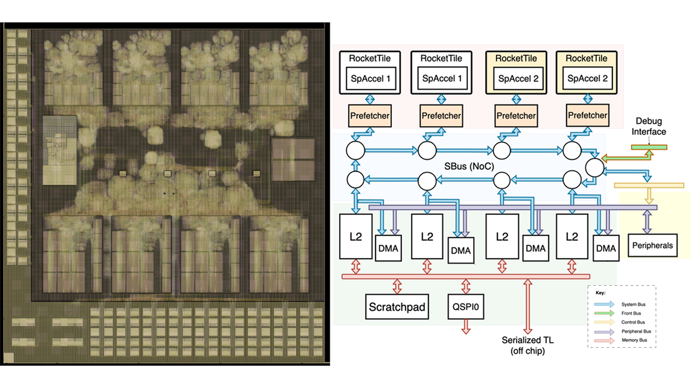

Yufeng Chi | 池雨峰
I am a third year PhD student at SLICE Lab at UC Berkeley, advised by Sophia Shao and Borivoje Nikolić.
My research work is on full-stack system architecture design for learning-based humanoid robots.
Research Interests
My research interests are in the intersection between computer architecture design and robotics, with the goal of building scalable, performant, and energy efficient learning-based humanoid robotic systems.
Publications
2025
2024
-

NeCTAr and RASoC: Tale of Two Class SoCs for Language Model Interference and Robotics in Intel 16
V Schmulbach, J Kim, E Gao, N Jha, E Wu, O Yu, B Oliveau, X Kong, B Roberts, C McMahon, L Yin, V Yang, B Brenner, G Moujaes, B Hao, L Revina, K Anderson, B Ngo, Y Chi, H Huang, R Sajadiany, R Gupta, E Schwarz, J Zhou, K Ho, J Zhao, A Flynn, B Nikolic
IEEE Hot Chips 36 Symposium (HCS)
-

2023
-

Creating a dynamic quadrupedal robotic goalkeeper with reinforcement learning
Xiaoyu Huang, Zhongyu Li, Yanzhen Xiang, Yiming Ni, Yufeng Chi, Yunhao Li, Lizhi Yang, Xue Bin Peng, Koushil Sreenath
IEEE/RSJ International Conference on Intelligent Robots and Systems (IROS)
Paper -

A Heterogeneous SoC for Bluetooth LE in 28nm
Felicia Guo, Nayiri Krzysztofowicz, Alex Moreno, Jeffrey Ni, Daniel Lovell, Yufeng Chi, Kareem Ahmad, Sherwin Afshar, Josh Alexander, Dylan Brater, Cheng Cao, Daniel Fan, Ryan Lund, Jackson Paddock, Griffin Prechter, Troy Sheldon, Shreesha Sreedhara, Anson Tsai, Eric Wu, Kerry Yu, Daniel Fritchman, Aviral Pandey, Ali Niknejad, Kristofer Pister, Borivoje Nikolic
IEEE Hot Chips 35 Symposium (HCS)
2022
-

Collaborative navigation and manipulation of a cable-towed load by multiple quadrupedal robots
Chenyu Yang, Guo Ning Sue, Zhongyu Li, Lizhi Yang, Haotian Shen, Yufeng Chi, Akshara Rai, Jun Zeng, Koushil Sreenath
IEEE Robotics and Automation Letters
Projects
Misc
I enjoy trying to create some designs and artworks from time to time.